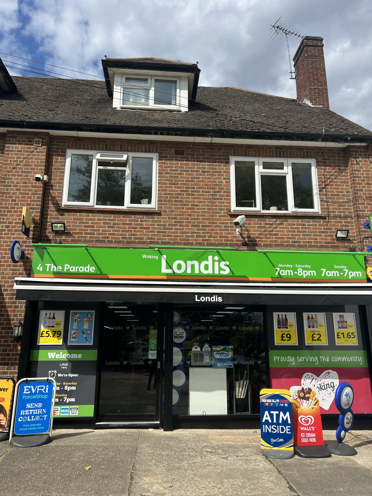

Woking's local mini supermarket, here since 1991.
From everyday groceries and fresh food to parcels, lottery and home delivery — Londis Woking Wines has been a dependable part of Woking for more than 35 years, built on honest service and a warm welcome.

The Community
Everything you need, close to home
As a local mini supermarket, we stock everyday groceries and household essentials alongside a growing range of services — all from one shop in Woking.
In-Store Shopping
- Groceries & household essentials
- Off licence
- Vape shop
- Doughgirl fresh desserts
- Harvey water softener salt
- Local products, where possible
Food & Drink To Go
- Hot food counter
- Costa Coffee machine
- Fresh desserts & snacks
- Cold drinks & everyday treats
Parcels & Post
- Send & collect parcels in-store
- Multiple major courier networks
- PayPoint bill payments
- National Lottery
Delivery
- Home delivery via Snappy Shopper
- Home newspaper delivery
- One of Woking's largest delivery rounds
- Friendly, local delivery team
More than just a corner shop
Londis Woking Wines started life as a small off-licence. Over more than three decades it has grown into a fully-stocked local mini supermarket — while keeping the same honest, face-to-face service the area has always known us for.
Today we're proud to serve local residents, families, students, commuters, office workers and visitors to the area, with everyday essentials, fresh food, household goods and a steadily growing range of services — all from the same shop in Woking.
"Londis Woking Wines aims to be the local community's trusted one-stop shop, where customers can always expect excellent value, outstanding service, and a welcoming experience."
Our MissionHonesty
Straightforward pricing and straight answers, every time you visit.
Trust
Built up over decades with the families, students and commuters we see every day.
Responsibility
To our customers, our staff, and the community we've always been part of.
Who We Serve
Local residents, families, students, commuters, office workers and visitors to the area.
One of Woking's largest newspaper delivery rounds
For more than 15 years, our team has delivered newspapers to homes and businesses across Woking, building a reputation for reliability, consistency and friendly service along the way.
Many of our customers have trusted us with their daily papers for years, because they know they'll arrive on time and without hassle — every morning.
- Over 15 years of delivery experience
- One of the largest rounds in Woking
- Reliable, dependable service
- Early morning deliveries
- Friendly local team
- Long-standing customer relationships
Delivery Areas
Not sure if we deliver to your road?
Get in touch and our team will let you know whether your address falls within our newspaper delivery round.
Shopping delivered, straight from our shelves
Londis Woking Wines offers home delivery through Snappy Shopper. Browse thousands of products from our store — groceries, household essentials, snacks, drinks, newspapers and everyday items — and have them delivered directly to your door.
- Fast local delivery
- Order from the comfort of home
- Wide range of products available
- Secure online payment
- Order via app or website
- Support your local independent store
How It Works
Download the Snappy Shopper app, or visit the website.
Enter your postcode.
Select Londis Woking Wines.
Browse our range of products.
Place your order.
Sit back and wait for delivery to your door.
Part of the neighbourhood for more than 35 years
We believe in supporting the community that supports us. That's meant sponsoring local clubs and schools over the years, and being a dependable, friendly presence on The Parade for residents, families and visitors alike.
Barnsbury Primary School
Proud sponsors, supporting the next generation in our local community.
Woking Vets Football Club
Supporting grassroots football and the local players who make it happen.
Westfield Cricket Club
Backing local sport and the community spirit it brings to Woking.
Areas We Serve
Recognised by our community and our industry
We don't chase awards — but it means a great deal when our customers and our industry recognise the work that goes on at Londis Woking Wines every day.
Favourite
Nextdoor Neighbourhood Favourite
Recognised by local residents as one of the area's most valued and trusted businesses.
of the Year
Retail News Retailer of the Year
Awarded for excellence in convenience retailing, customer service and community engagement.
Our owner Arneet was named a Retail News "30 Under 30" winner for 2025, recognising rising talent across UK convenience retail — a personal honour that reflects the whole team's commitment to the shop and our customers.
Rated by our customers on Google
We're proud of the reputation we've built with local residents over the years. Read what customers are saying about their visits to Londis Woking Wines on Google.
Frequently asked questions
Visit us on The Parade
Drop in for everyday shopping, parcels, hot food and more — with a large private car park right outside.
Address
4 The Parade, Blackbridge Road
Woking, Surrey, GU22 0DH
Phone
01483 721007Opening Hours
Including all bank holidays
Parking
Large private on-site car park — quick, easy and convenient.